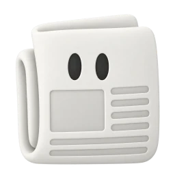

Jay — AI Test Manager
Modeled on Jason Arbon’s approach to testing: start with the customer’s intent, follow the consequential risks, challenge the evidence, and make the next useful action clear.
CARBON · BUILT BY TESTERS.AI
Jay orchestrates CARBON’s specialist sub-agents. These are AI testing perspectives, not human reviewers. A profile describes available expertise; only recorded execution evidence establishes what was tested.
Modeled on Jason Arbon’s approach to testing: start with the customer’s intent, follow the consequential risks, challenge the evidence, and make the next useful action clear.
Web-application security specialist focused on authentication, authorization, session safety, exposed data, dependencies, and practical vulnerability evidence.
OWASP-focused security specialist who challenges access control, injection, insecure design, misconfiguration, vulnerable components, integrity, logging, and SSRF risks.
Accessibility specialist focused on keyboard use, assistive technology, inclusive interactions, responsive access, labels, feedback, and barriers affecting disabled users.
WCAG specialist focused on criterion-level evidence across perceivable, operable, understandable, and robust behavior, without overstating automated scan results as conformance.
User-centered design and usability specialist focused on discoverability, task clarity, responsive behavior, interaction friction, visual hierarchy, and inclusive UX.
Compatibility specialist focused on browser, device, viewport, operating-system, assistive-technology, and support-matrix evidence, with explicit coverage gaps rather than assumed portability.
Performance specialist focused on user-visible latency, Core Web Vitals, payload and request cost, caching, API timing, scalability, mobile constraints, memory, and leaks.
Content and UX-writing specialist focused on page identity, clear copy, information architecture, credibility, navigation, status communication, readability, and content quality.
Localization specialist focused on translation accuracy, locale formats, pluralization, truncation, bidirectional layout, cultural fit, regulatory copy, and recovery behavior across languages.
Data-integrity specialist focused on agreement between rendered values, APIs, events, schemas, exports, storage, calculations, retention, and downstream state.
Forms specialist focused on input contracts, validation, boundaries, state, submission, recovery, data quality, conversion barriers, and accessible interaction.
Error and recovery specialist focused on truthful status, clear messages, consistent severity, actionable recovery, safe logs, failure loops, and user trust.
Search-interface specialist focused on discoverability, query handling, suggestions, empty states, input accessibility, relevance feedback, and resilient result navigation.

AIDigital publishing specialist focused on article identity, readability, supporting media, metadata, context, advertising boundaries, and multi-device content behavior.
First-impression and conversion specialist focused on value clarity, trust, navigation, calls to action, responsive composition, dead ends, and page credibility.
Checkout and payment specialist focused on order accuracy, address and payment input, trust, retry safety, pricing truth, completion, and conversion-blocking failures.
Shopping-cart specialist focused on line-item state, quantities, promotions, totals, inventory changes, persistence, accessibility, and safe transition to checkout.
Pricing and subscription specialist focused on plan clarity, comparison, currency and locale, hidden conditions, billing cadence, conversion paths, and truthful claims.
Privacy specialist focused on personal-data exposure, consent, tracking, collection minimization, storage and transfer, debug leakage, user expectations, and AI-specific privacy risks.
GDPR specialist focused on lawful consent, personal-data exposure, international transfer, minimization, retention, security, data-subject rights, transparency, and accountability.
Cookie-consent specialist focused on prior consent, purpose and vendor choices, reject symmetry, preference persistence, withdrawal, tracking verification, and regional behavior.
Policy-content specialist focused on discoverability, internal consistency, versioning, contact details, user rights, actual-product alignment, accessibility, and credible presentation.
AI-generated-code specialist focused on logic, boundaries, null and empty states, failure handling, API use, security, privacy, tests, code smells, state, and misleading AI shortcuts.
Conversational-AI specialist focused on task success, conversation quality, state, memory, recovery, privacy, safety, injection, tools, latency, integration, and nondeterminism.